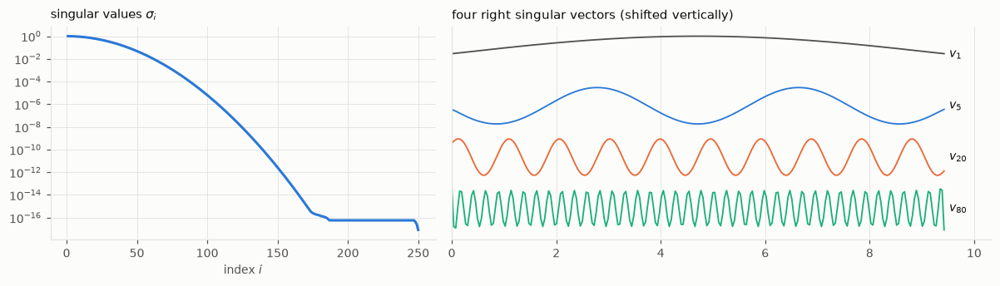
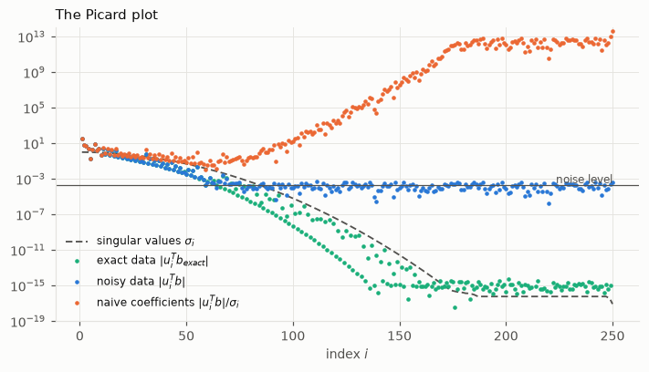
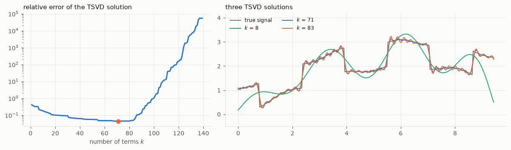
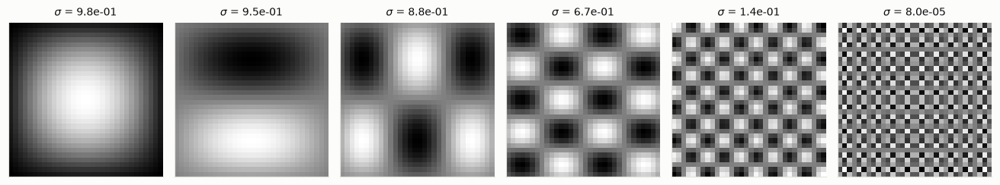
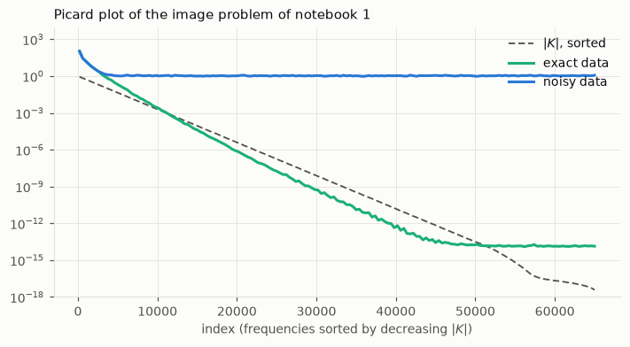
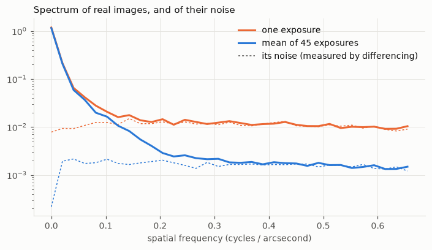

import numpy as np
from numpy.fft import fft2, ifft2
import matplotlib.pyplot as plt
import hnotools as hno
hno.style()
rng = np.random.default_rng(0)
data = hno.load_sample()5 The SVD and spectral analysis
Companion notebook to Hansen, Nagy & O’Leary, Deblurring Images, chapter 5.
Notebook 1 showed that the naive solution fails. This one shows why, with the one tool that explains every linear inverse problem: the singular value decomposition (SVD).
What you will take away
- The SVD splits a blur into independent channels, each with its own gain \(\sigma_i\). Small gain means: that component of the scene barely reaches the data.
- The naive solution divides each channel by its gain. Where the gain is below the noise, it divides noise by almost zero.
- The Picard plot shows, on your own data, how many channels carry information. It is the first thing to draw for any inverse problem.
- A regularised solution is a filtered sum over the channels.
- For images with periodic boundaries, the channels are spatial frequencies and the SVD is the Fourier transform you already know.
5.1 The SVD of a blur
We start in one dimension, with the signal of notebook 1 and a \(250 \times 250\) blurring matrix, because there everything can be computed and plotted. (The Gaussian kernel is the same as in notebook 1, except that we no longer cut it short at 25 samples; exercise 4 shows what the cut does.)
Any matrix can be written
\[A = U\,\Sigma\,V^{\mathsf T} = \sum_i \sigma_i\, u_i\, v_i^{\mathsf T},\]
with orthonormal right singular vectors \(v_i\) (patterns in the scene), orthonormal left singular vectors \(u_i\) (patterns in the data), and singular values \(\sigma_1 \ge \sigma_2 \ge \dots \ge 0\). Read it as a three-step machine: decompose the scene on the patterns \(v_i\), multiply the \(i\)-th coefficient by \(\sigma_i\), rebuild with the patterns \(u_i\).
N = 250
s, signal = hno.lecture_signal(N)
A = hno.blur_matrix_1d(hno.gaussian_kernel_1d(4.0, 40), N)
U, sv, Vt = np.linalg.svd(A)
print('A equals U diag(sv) Vt:', np.allclose(A, U @ np.diag(sv) @ Vt))
print(f'largest singular value {sv[0]:.3f}, smallest {sv[-1]:.1e}, ratio (condition number) {sv[0] / sv[-1]:.1e}')
fig, ax = plt.subplots(1, 2, figsize=(11, 3.2), gridspec_kw={'width_ratios': [1, 1.4]})
ax[0].semilogy(np.arange(1, N + 1), sv, color=hno.BLUE)
ax[0].set_xlabel('index $i$'); ax[0].set_title('singular values $\\sigma_i$', loc='left')
for i, col in zip((0, 4, 19, 79), (hno.INK2, hno.BLUE, hno.ORANGE, hno.AQUA)):
ax[1].plot(s, Vt[i] + 0.25 * (3 - (0, 4, 19, 79).index(i)), color=col, lw=1.2)
ax[1].text(s[-1] + 0.1, 0.25 * (3 - (0, 4, 19, 79).index(i)), f'$v_{{{i + 1}}}$', va='center')
ax[1].set_yticks([]); ax[1].set_xlim(0, s[-1] + 0.9)
ax[1].set_title('four right singular vectors (shifted vertically)', loc='left')
fig.tight_layout()A equals U diag(sv) Vt: True
largest singular value 0.999, smallest 8.4e-18, ratio (condition number) 1.2e+17
Two facts, true for every blur:
- the singular values decay steadily, over many orders of magnitude, with no gap, until they reach the rounding level of the computer near \(10^{-17}\);
- the singular vectors oscillate more and more as the index grows.
Together they say: a blur transmits smooth patterns well and fine patterns badly. That is all a blur is.
5.2 The naive solution, channel by channel
Since \(U\) and \(V\) are orthogonal, the solution of \(A x = b\) is
\[x_{\text{naive}} = \sum_i \frac{u_i^{\mathsf T} b}{\sigma_i}\; v_i .\]
Each coefficient of the data, \(u_i^{\mathsf T} b\), is divided by the gain of its channel. With noisy data \(b = b_{\text{exact}} + e\), each coefficient is the sum of a signal part and a noise part. Plot both, and the singular values:
noise = 2e-4
b_exact = A @ signal
b = b_exact + noise * rng.standard_normal(N)
coef_exact = np.abs(U.T @ b_exact)
coef = np.abs(U.T @ b)
idx = np.arange(1, N + 1)
fig, ax = plt.subplots(figsize=(7.5, 3.8))
ax.semilogy(idx, sv, color=hno.INK2, lw=1.2, ls=(0, (4, 2)), label='singular values $\\sigma_i$')
ax.semilogy(idx, coef_exact, '.', color=hno.AQUA, ms=4, label='exact data $|u_i^T b_{exact}|$')
ax.semilogy(idx, coef, '.', color=hno.BLUE, ms=4, label='noisy data $|u_i^T b|$')
ax.semilogy(idx, coef / sv, '.', color=hno.ORANGE, ms=4, label='naive coefficients $|u_i^T b| / \\sigma_i$')
ax.axhline(noise, color=hno.INK2, lw=0.8)
ax.text(N, noise * 1.6, 'noise level', ha='right', fontsize=8, color=hno.INK2)
ax.set_ylim(1e-19, 1e14); ax.set_xlabel('index $i$')
ax.set_title('The Picard plot', loc='left'); ax.legend(loc='lower left', fontsize=8);
Figure 5.2 is the Picard plot. Take the time to read it.
- Green, exact data. The coefficients fall faster than the singular values (dashed). This is the discrete Picard condition: it means the exact problem has a decent solution, because \(|u_i^{\mathsf T} b| / \sigma_i\) stays bounded.
- Blue, noisy data. The coefficients follow the green ones at first, then level off at the noise level. From there on, they are noise: the signal that used to be there is far below.
- Orange, what the naive solution uses. Fine on the left. On the right, noise divided by smaller and smaller \(\sigma_i\): the coefficients grow without limit. The naive solution is dominated by its last, meaningless terms.
The index where the blue points meet the noise floor is the number of channels through which the data tell us anything.
5.3 Spectral filtering
The cure is now obvious: keep the terms that carry information, damp or drop the others. Every method of chapter 6 has the form
\[x_{\text{filt}} = \sum_i \phi_i\, \frac{u_i^{\mathsf T} b}{\sigma_i}\; v_i ,\]
with filter factors \(\phi_i\) close to 1 for the good channels and close to 0 for the bad ones. The simplest choice keeps the first \(k\) terms and drops the rest: the truncated SVD (TSVD).
def tsvd(U, sv, Vt, b, k):
"""Truncated SVD solution: the first k terms of the naive sum."""
return Vt[:k].T @ ((U[:, :k].T @ b) / sv[:k])
ks = np.arange(1, 140)
errors = [hno.rel_error(tsvd(U, sv, Vt, b, k), signal) for k in ks]
k_best = int(ks[np.argmin(errors)])
k_floor = int(np.argmax(coef < 3 * noise)) + 1 # first coefficient at the noise floor
print(f'best k = {k_best} (error {min(errors):.3f}); first coefficient within 3x of the noise floor: i = {k_floor}')
fig, ax = plt.subplots(1, 2, figsize=(11, 3.3), gridspec_kw={'width_ratios': [1, 1.5]})
ax[0].semilogy(ks, errors, color=hno.BLUE); ax[0].plot(k_best, min(errors), 'o', color=hno.ORANGE)
ax[0].set_xlabel('number of terms $k$'); ax[0].set_title('relative error of the TSVD solution', loc='left')
ax[1].plot(s, signal, color=hno.INK2, lw=1.0, label='true signal')
for k, col in ((8, hno.AQUA), (k_best, hno.BLUE), (k_best + 12, hno.ORANGE)):
ax[1].plot(s, tsvd(U, sv, Vt, b, k), color=col, lw=1.3, label=f'$k$ = {k}')
ax[1].set_ylim(-0.5, 4.2); ax[1].set_title('three TSVD solutions', loc='left'); ax[1].legend(loc='upper left', fontsize=8, ncol=2)
fig.tight_layout()best k = 71 (error 0.044); first coefficient within 3x of the noise floor: i = 59
The U-curve of notebook 1 (Figure 1.5) again, now explained term by term.
- Too few terms: only smooth patterns are allowed, and the steps of the signal are rounded off (regularisation error).
- Too many: noise-dominated terms enter with huge weights (perturbation error).
- The best \(k\) sits close to where the Picard plot said the data hit the noise floor. You can read a good regularisation off the Picard plot without knowing the true signal.
Note what even the best solution cannot do: the steps stay rounded, with small oscillations next to them. Sharp steps need the fine patterns, and the data no longer contain them.
5.4 Two dimensions: the patterns are images
For an image, the singular vectors are images too. With a separable blur (notebook 4) they are products of the 1-D patterns: if \(A = A_c \otimes A_r\), its singular vectors are \(v^c_i \otimes v^r_j\) and its singular values \(\sigma^c_i\, \sigma^r_j\). Here are a few of these basis images, for a Gaussian blur on a \(32 \times 32\) image:
n = 32
A1 = hno.blur_matrix_1d(hno.gaussian_kernel_1d(1.5, 5), n)
U1, s1, V1t = np.linalg.svd(A1)
pairs = [(0, 0), (1, 0), (1, 2), (4, 3), (9, 9), (20, 22)]
fig, ax = plt.subplots(1, len(pairs), figsize=(12, 2.4))
for a, (i, j) in zip(ax, pairs):
a.imshow(np.outer(V1t[i], V1t[j]), cmap='gray')
a.set_title(f'$\\sigma$ = {s1[i] * s1[j]:.1e}', fontsize=9)
a.set_xticks([]); a.set_yticks([]); a.grid(False)
fig.tight_layout()
Same story as in 1-D: large singular values go with smooth images, small ones with fine checkerboards.
With periodic boundaries we do not even need to compute an SVD. Notebook 4 showed that \(A\) is diagonalised by the Fourier transform: the patterns are the sinusoids of each spatial frequency, and the singular values are the moduli of the transfer function,
\[\sigma_i \;\longleftrightarrow\; |K(\nu)| .\]
So for images, “index \(i\)” becomes “spatial frequency \(\nu\)”, and the Picard plot becomes the spectrum plot of notebook 1 (Figure 1.4). Here it is again in Picard form, the \(65\,536\) frequencies sorted by decreasing \(|K|\):
x_true = data['hubble'].astype(float)
psf = hno.gaussian_psf(x_true.shape, fwhm=6.0)
K = hno.psf2otf(psf)
noise2 = 0.005
B_exact = fft2(hno.blur(x_true, psf))
B = B_exact + fft2(noise2 * rng.standard_normal(x_true.shape))
order = np.argsort(-np.abs(K).ravel())
def running_median(a, w=400):
a = a[: len(a) // w * w].reshape(-1, w)
return np.median(a, axis=1)
i_axis = running_median(np.arange(K.size, dtype=float))
fig, ax = plt.subplots(figsize=(7.5, 3.6))
ax.semilogy(i_axis, running_median(np.abs(K).ravel()[order]), color=hno.INK2, lw=1.2, ls=(0, (4, 2)), label='$|K|$, sorted')
ax.semilogy(i_axis, running_median(np.abs(B_exact).ravel()[order]), color=hno.AQUA, label='exact data')
ax.semilogy(i_axis, running_median(np.abs(B).ravel()[order]), color=hno.BLUE, label='noisy data')
ax.set_ylim(1e-18, 1e4); ax.set_xlabel('index (frequencies sorted by decreasing $|K|$)')
ax.set_title('Picard plot of the image problem of notebook 1', loc='left'); ax.legend(loc='upper right');
usable = int(np.sum(running_median(np.abs(B).ravel()[order]) > 2 * np.median(np.abs(B).ravel()[order][-20000:])) * 400)
print(f'frequencies clearly above the noise floor: about {usable} of {K.size} ({usable / K.size:.1%})')frequencies clearly above the noise floor: about 2800 of 65536 (4.3%)
Out of 65 536 unknowns, the data determine a few thousand. Everything else in a deblurred image comes from the method, not from the data. This is the number to keep in mind when someone shows you a spectacularly sharp restoration.
5.5 Real data: what stacking buys
For real data there is no “exact” curve. But we can still draw the two things that matter: the spectrum of the image, and the spectrum of its noise, which we measure by differencing as in notebook 2. Where the first sinks into the second, the information ends.
We do this for one exposure of our telescope and for the average of all 45, on a corner of the field that contains nebula but no bright star. (A star is a point, so its spectrum is flat and would hide what we want to see.)
cube = data['cube'].astype(float)[:, 2:66, 2:66] # a 64 x 64 star-free corner, 45 exposures
scale = float(data['pixel_scale'])
def taper(b, width=8):
ramp = np.ones(b.shape[0])
ramp[:width] = 0.5 - 0.5 * np.cos(np.pi * np.arange(width) / width)
ramp[-width:] = ramp[:width][::-1]
return b.mean() + (b - b.mean()) * np.outer(ramp, ramp)
cases = (('one exposure', cube[0], (cube[0] - cube[1]) / np.sqrt(2), hno.ORANGE),
('mean of 45 exposures', cube.mean(axis=0), (cube[0::2].mean(axis=0) - cube[1::2].mean(axis=0)) / 2, hno.BLUE))
fig, ax = plt.subplots(figsize=(7.5, 3.8))
for name, img, noise_img, col in cases:
nu, spec = hno.radial_profile(fft2(taper(img)))
_, nspec = hno.radial_profile(fft2(taper(noise_img)))
knee = nu[1 + np.argmax(spec[1:] < 2 * nspec[1:])]
ax.semilogy(nu / scale, spec, color=col, label=name)
ax.semilogy(nu / scale, nspec, color=col, lw=1.0, ls=(0, (2, 2)))
print(f'{name:22s} noise level {np.median(nspec[5:]):.2e}, image within 2x of its noise from {knee / scale:.2f} cycles/arcsec')
ax.plot([], [], color=hno.INK2, lw=1.0, ls=(0, (2, 2)), label='its noise (measured by differencing)')
ax.set_xlabel('spatial frequency (cycles / arcsecond)')
ax.set_title('Spectrum of real images, and of their noise', loc='left'); ax.legend();one exposure noise level 1.12e-02, image within 2x of its noise from 0.10 cycles/arcsec
mean of 45 exposures noise level 1.65e-03, image within 2x of its noise from 0.20 cycles/arcsec
Averaging 45 exposures lowers the noise by a factor close to \(\sqrt{45} \approx 7\) and leaves the signal where it was. The point where the image sinks into its noise moves from about 0.10 to about 0.20 cycles per arcsecond. In two dimensions, twice the radius means four times as many channels carrying information, so four times as much of the scene that can honestly be restored. No deblurring algorithm can do this; only more photons can.
This is why our project never deblurs single exposures. Notebook 8 shows how to combine them so that not one of these newly usable channels is wasted.
Your turn
- Counting sign changes. For the 1-D problem, count the sign changes of \(v_i\) for \(i = 1, \dots, 60\) and plot the count against \(i\). What simple law do you find?
- More noise, fewer channels. Redo sections 5.2 and 5.3 with noise \(10^{-2}\) and \(10^{-6}\). Tabulate the noise level, the index where the coefficients reach the floor, and the best \(k\). How many channels does a factor 100 in noise cost?
- A wider blur. Replace the kernel by
hno.gaussian_kernel_1d(8.0, 80). What happens to the singular values, and to the best \(k\)? - A kernel cut short. Use the kernel of notebook 1,
hno.gaussian_kernel_1d(4.0, 12), which stops at 25 samples. The singular values now stall on a plateau near \(10^{-3}\). Why? (Cutting a kernel multiplies it by a box; what does that do to its Fourier transform?) Is the problem easier or harder to invert, and is that good news? - Picard violated. Take \(b\) = pure noise (no signal at all) and draw its Picard plot. How would you recognise, on real data, that an image contains nothing but noise?
- 2-D basis images. In section 5.4, reconstruct the top-left \(32 \times 32\) corner of
x_truefrom only the 100 basis images with the largest \(\sigma^c_i \sigma^r_j\). (Hint: the coefficients areV1t @ X @ V1t.T.) What is lost? - How many exposures? From section 5.5, estimate how many exposures would be needed to push that point to 0.4 cycles per arcsecond. Is it a realistic observing programme?